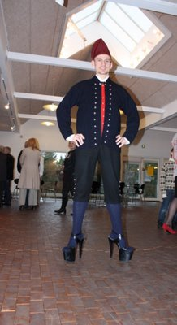
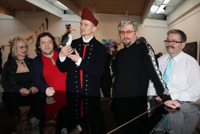

Várframsýningin 2009, Færøerne. |
Úr bloggur hjá Birgir Kruse við hugleiðandi tíðargreinum og stubbum um ferðing, miðlar, film, tónleik og annað, sum uppi er í tíðini sum hann ikki kann bara sær fyri at skriva nøkur orð um... |


Várframsýningin 2009 lat upp í dag. Aldri havi eg sæð so mong møta til hesa framsýning, sum leingi hevur verið í einum djúpum aldudali. Við føstum tema, samleika, og einum innbodnum listafólki, Dennis Agerblad, hevur tað eydnast felagnum Føroyskum Myndlistafólkum sjáldsama væl at skipa framsýningina. Tey mongu møttu fingu eisini eina uppliving og fóru ríkaði avstað. Hetta var list, ið savnaði, provokeraði og flutti mørk. Meiri kann eg ikki ynskja. Stjørnan var hin eleganti Dennis Agerblad, ið sýndi fram egnan kynsligan samleika, sum samstundis vant føroyskan tjóðskap upp á tráð. Stuttligt og ertandi. Og heilt vist ikki sæða fyrr í hesum sali. Ova, alias Dennis, og eg skiftu orð um skúla og bókmentir og tá hann var til próvtøku í donskum í 10. flokki í Vestmanna skúla í 1986. Í koti, sum hann sjálvur hevði sniðgivið og seymað, kom hann upp í Herman Bang. Støðumetið, ið eg sjálvur slapp at avgerða sum próvdómari, var í ovasta endanum. Elegantur, tá sum nú, avvápnaði hann í plateau-skóm allan kritikk, ið kundi hugsast at rulla seg út í Listaskálanum, longu í durinum. Marjun Jóanesardóttir var eisini spennandi við eini røð av andlitsmyndum. Longu tá vit gingu í barnaskúlanum saman, fekst Marjun við tekning og máling. Hon legði mær lag á, tá eg við svartari batik-máling teknaði Che Guevara á eina gula T-shirt. Hon helt í mong ár. Allar best dámdi mær teir fýra málningarnar hjá Pól Skarðenni, hann kallar 'Á ferð 1-4'. Pól greiddi sjálvur frá um myndaevnið, sum er ein seymað klútadukka. Í eina førinum hevur dukkan vilja og í hinum førinum hevur hon ongan vilja. Í meðan verður hon kasta út í tilveruna. Í báðum førum síggja vit við bláum baksýni eina røða av suttum, tátum. Í fyrru myndin eru tær so fjarar, at tær kundu skilst sum krossar yvir herðmannagravir, meðan viljasterka dukkan er ein springandi fallskýggjahermaður. Her skal sigast at tað er stutt síðani eg sá The Wall. Hin dukkan sveimar viljaleys millum føroyskt grót og eina buddistiska bønarklokku, ella ein skýskravara fullan av fólki, ella bara lívsins bók, har øll eru skrivað við strikum. Hetta seinasta var uppskotið hjá Pól. Kanska, kanska ikki. Men verð nú ikki so konkretur, sigur hann. Í millum eru tvær aðrar myndir, onnur av sveimandi verum í innilæstum bløðrum og at enda ein mynd, ið dregur dukkur upp á tráð og letur eina stóra favnandi, men innantóma dukku, bjóða vælkomin. Hvør skal siga: 'Latið smábørnini koma til mín'. Men innbjóðandi dukkan er tóm. Vit kunnu fylla í hana, tað vit vilja. Heilt frá appelsingula Kenny í teknirøðini South Park til ein rustaðan Jesus úr Nýggja testamenti. Fyrireikararnir siga um yvirskipaða evnið, at hvønn dag gjøgnum alt lívið lata vit okkum í skiftandi samleikar og leiklutir til ymisk høvi. Í uppvøkstrinum fáa vit ein samleika frá staðnum, vit búgva, og frá menniskjum, vit liva saman við. Alt eftir kyni og uppvøkstri fáa vit samleika(r) tillutaða(r). Luttakarar á Várframsýningini eru Dennis Agerblad, Anna Katrina Højgård, Ólavur Sverri Trónd II Thorsteinsson, Herdis Solveig Jakobsen, Rannvá Holm Mortensen, Marjun Jóanesardóttir, Guðrið Poulsen, Jóannes Lamhauge, Ellis K. Mortensen, Bárður Eklund, Bárður Oskarsson, Ole Wich, Nicolina Højgaard, Rakul Skaale, Pól Skarðenni og Annika Hansen. Várframsýningin var ein uppliving - langt omanfyri tað vanliga. Og upplivingin røkkur heilt til 12. apríl. Thanks! |